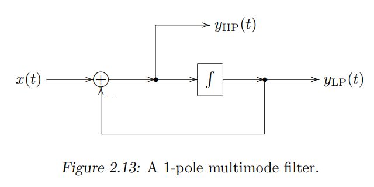

TPT 1 pole Lowpass


we have
\[yLP=g*yHP+s\]
\[yHP=x-yLP\]
so
\[yHP=\frac{1}{1+g}(x-s)\]
\[yLP=\frac{g}{1+g}x+\frac{1}{1+g}s\]
float TickTptLP(float x, float w) {
// lowpass
float g = std::tan(w / 2);
// highpass
float yHP = (x - s) / (1 + g);
float v = g * yHP;
// float gLP = g / (1 + g);
// float const v = gLP * (x - s_);
s_ += v;
float yLP = s_;
s_ += v;
return yLP;
}